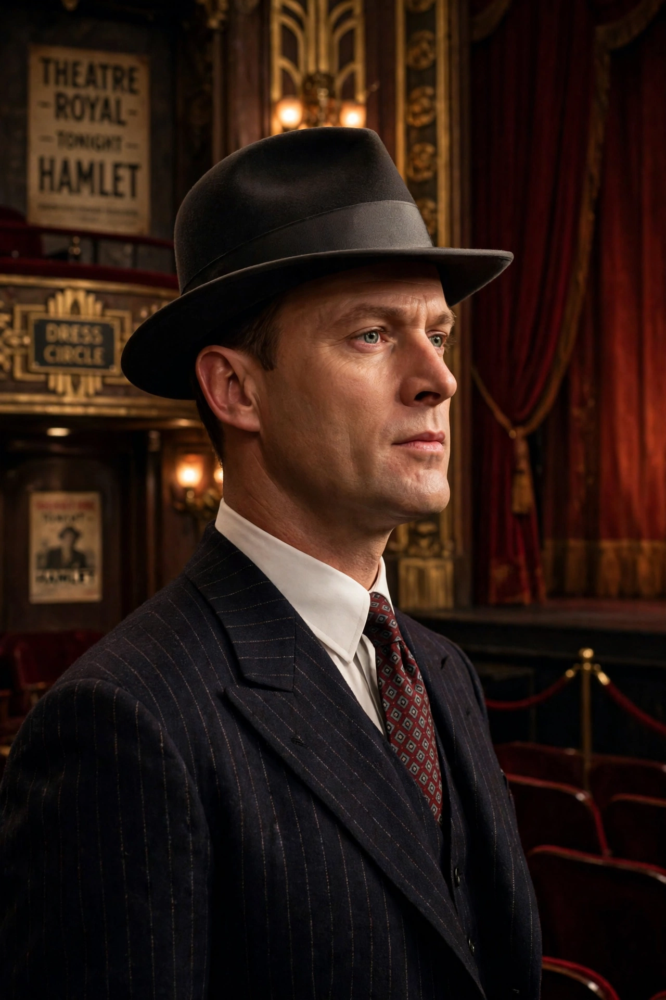

| First appearance | A Man Lay Dead (1934) |
|---|---|
| Created by | Ngaio Marsh |
| Occupation | Detective Chief Superintendent, Scotland Yard |
| Spouse | Agatha Troy |
Detective Chief Superintendent Roderick Alleyn is a fictional detective created by New Zealand author Ngaio Marsh, featuring in 32 detective novels between 1934 and 1982.
Alleyn is a gentleman detective of aristocratic background, educated at Oxford, who served in World War I and briefly in diplomacy before joining the Metropolitan Police. He is aided by Inspector Fox ("Br'er Fox") and later works with journalist Nigel Bathgate. He marries the artist Agatha Troy, whom he meets in Artists in Crime (1938).
The series is noted for theatrical and artistic settings reflecting Marsh's theatre career: Death in Ecstasy, Overture to Death, Death at the Bar, Colour Scheme (set in New Zealand), Photo Finish, and finally Light Thickens (1982). Alleyn ranks alongside Poirot and Lord Peter Wimsey in Golden Age detective fiction.
The BBC adapted several novels as Alleyn Mysteries (1990–94) with Patrick Malahide.